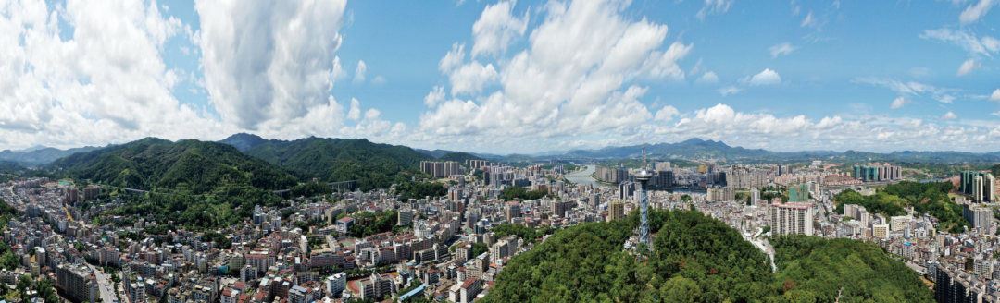

Welcome to longchuan
我叫龙川，位于广东省东北部，迄今为止已经拥有2237年的悠久历史，是中国保留最古县名的县份之一，素有岭南古城之称。
如今的“我”，不仅是全国重点生态功能区、原中央苏区县，还是粤东北地区重要交通枢纽，深度连接粤港澳大湾区，跑出区域经济发展的“加速度。
我叫龙川，位于广东省东北部，迄今为止已经拥有2237年的悠久历史，是中国保留最古县名的县份之一，素有岭南古城之称。
如今的“我”，不仅是全国重点生态功能区、原中央苏区县，还是粤东北地区重要交通枢纽，深度连接粤港澳大湾区，跑出区域经济发展的“加速度。
别名：循州
外文名：longchuan
所属地区：广东省河源市
行政区类别：县级
语言：普通话，本土方言为客家话

龙川县城
龙川县文化广场
龙川县行政图
面积：东西横距45公里，南北纵跨103公里，总面积3081.31平方公里
人口：户籍人口98.18万人，户数28.82万户，常住人口69.52万人，海外华侨和港澳台同胞34.1万人。
家庭成员：24个镇， 315个行政村，46个居委会，1303个自然村。
24个乡镇：老隆镇、佗城镇、义都镇、黄布镇、鹤市镇、紫市镇、通衢镇、登云镇、丰稔镇、四都镇、铁场镇、龙母镇、田心镇、黄石镇、黎咀镇、车田镇、赤光镇、廻龙镇、新田镇、岩镇、麻布岗镇、贝岭镇、细坳镇、上坪镇
《汉书·地理志》记载：“有龙穿地而出，即穴流泉，因以为号。”
嘉庆年间《龙川县志》记载：“龙川邑有龙潭，自嶅山分注会于川，故名。”
红色苏区
在这片热土上，龙川县有着不少的历史印记。
在广东，龙川县是最早获得解放的县级地，拥有厚重的红色文化。
这些红色历史，是龙川县开展党史学习教育的鲜活教材和党风廉政建设教育爱国主义教育的精神资源。
原中央苏区县——龙川
廻龙镇大塘村五兴龙县苏维埃政府
铁场镇桥头村黄居仁故居
黄布镇欧江村仙寨乡苏维埃政府旧址
香港文化名人大营救指挥部旧址——龙川福建会馆
传统的做法、不变的味道已经烙进了龙川人的灵魂。
是一代又一代龙川人生生不息的烟火气息。
车田豆腐和佗城豆腐丸
梅花酥和牛筋糕
卷春香信和铁勺喇
八宝鱼生和油果